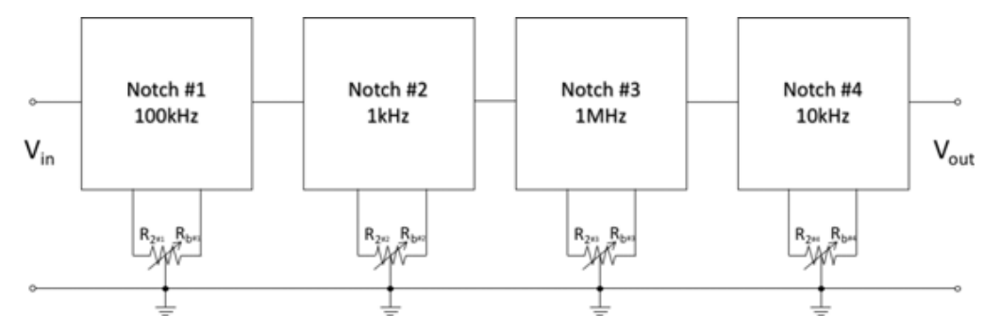
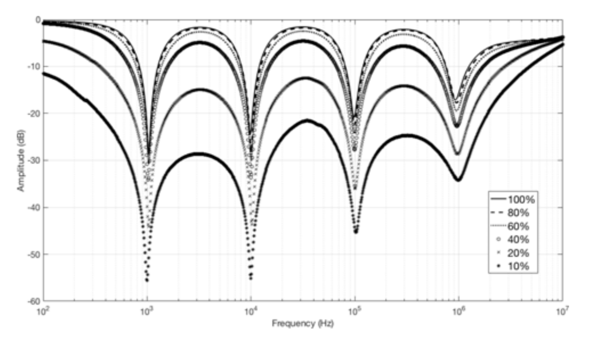

Tunable Comb Filter
Publication: A New CFOA-Based Shadow Analog Comb Filter (JAPED, 2020)
Overview
This project introduces a novel CFOA-based shadow comb filter. The filter cascades multiple shadow notch filters. Each notch’s bandwidth is controlled via the gain of an amplifier using a grounded variable resistor. The design enables independent electronic tuning of each notch’s bandwidth without affecting the center frequency or overall gain. Four notch filters were implemented targeting 1 kHz, 10 kHz, 100 kHz, and 1 MHz. Component values were carefully chosen to ensure tuning range and performance.

Features
- Uses commercially available AD844 ICs
- Independently tunable notch bandwidths
- Constant notch frequency and gain during bandwidth tuning
- Low output impedance — easy to cascade
- Minimal component count
Notch Filter Design
Core equations governing the design:
- Center frequency: ω0 = 1 / √(R₁R₃C₁C₂)
- Bandwidth: B = (1 / C₂R₂) + (G / C₂R₁), where G = -Rb / Ra
- Gain: 1.0 (flat gain through tuning)

Experimental Results
Experiments validated smooth electronic bandwidth tuning without affecting the notch frequency, as shown in the figure below. By simultaneously varying the resistances R2 and Rb using a single variable resistor—where one increases while the other decreases, and their combined value is constant—the bandwidth can be adjusted effectively. The achieved notch depths at four different frequencies are listed below:
- 1 kHz → -56 dB
- 10 kHz → -55 dB
- 100 kHz → -46 dB
- 1 MHz → -36 dB
